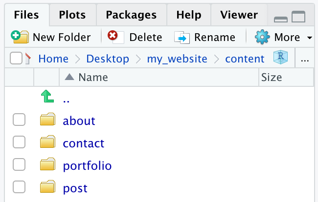
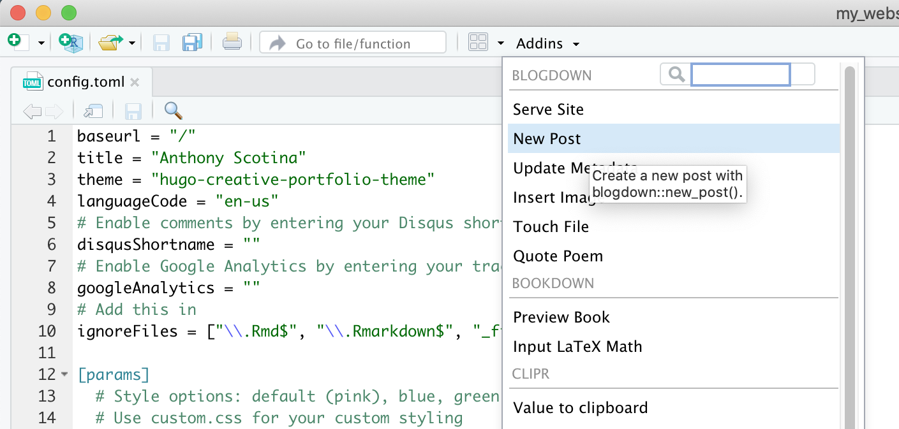
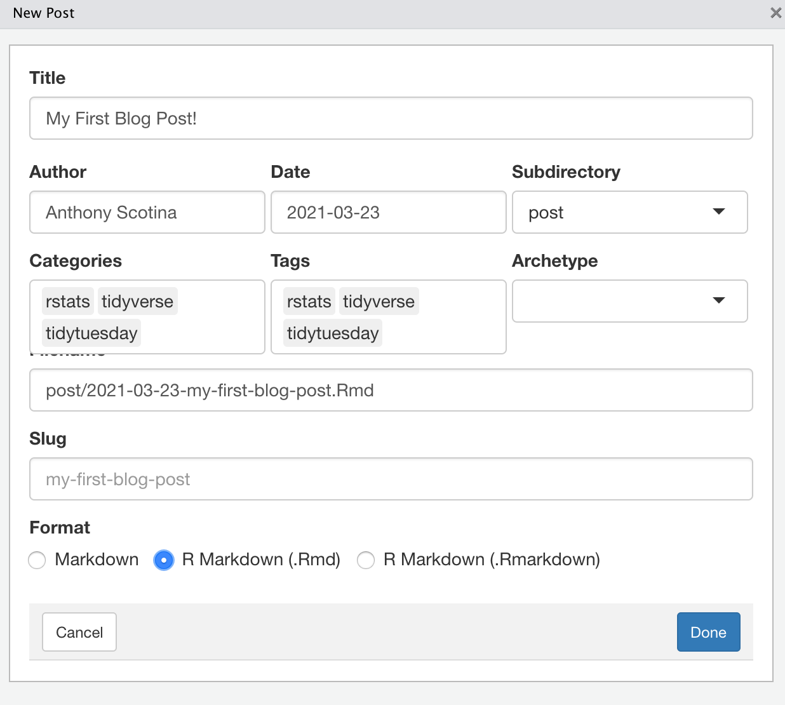

Editing Pages
You can edit different sections in your website via the .md files located within the content folder, and you can even add new sections (which you’d have to specify within your config.toml file that we played with earlier).
For now, we’ll look at the three default sections within the “Creative Portfolio” Hugo theme: (1) About, (2) Contact, and (3) Home (Portfolio).

About
One of the default pages that comes with the “Creative Portfolio” Hugo theme is the “About” page. This is where you can describe a little bit more about yourself and your interests, add a photo of yourself, and link to a resume (for example). To access and edit this page within RStudio, go to the “Files” pane in the bottom right (unless you reconfigured the RStudio panes) and select the following: content -> about -> _index.md
You can leave the date as is, I don’t think that matters here. You could change the title to something else if you want - I’ll leave it as About me for now. After that, type whatever you want about yourself!
For example, here’s what I wrote, taken from the bio in my website (yes, made in blogdown).
---
date: "2016-11-05T21:05:33+05:30"
title: About me
---
Hello, and welcome to my website!
I am an Assistant Professor of Statistics at Simmons University. My research interests are in causal inference with a focus on design and analysis of observational studies with multiple treatments, integrating R programming in statistics courses, and sports statistics.
![This is me][1]
#### Education
* PhD in Biostatistics, 2018
* Brown University
* MS in Statistics, 2014
* University of Massachusetts, Amherst
* AB in Mathematics and Psychology, 2012
* College of the Holy Cross
[1]: /img/cat.png- Note: I dragged a photo of me (called
cat.png) to theimgfolder, which can be found viamy_website -> static -> img. And this is what it looks like!

Contact
You can access and edit the “Contact” page via content -> contact -> _index.md. Note that this section is called “Get in touch” on the home page, but you can change the title of this section via config.toml.
This page is pretty straightforward, and there isn’t much you’d need to add: maybe an email address, work phone number, or anything else that you’d feel comfortable sharing that you’d want folks to use to contact you. This section automatically adds the social media widgets that you specified in config.toml, and it adds an email section that links directly to the email address that you entered earlier.
You might find this section redundant if you kept the email widget in config.toml. You could remove this section altogether, just delete the following in config.toml:
[[params.navlinks]]
name = "Get in touch"
url = "contact/"Portfolio
This is the most significant section of your website, since this is where you can post all the cool stuff you’ve done in R and Data Science! That’s why it is also the home page by default. Access the Portfolio section via content -> portfolio in the RStudio “Files” pane. By default, there will be eleven template .md files in here - you’ll want to move these somewhere else since you don’t want them to appear in your website. But I wouldn’t recommend deleting them altogether, in case you want to use one as an example template.
One cool feature that we can use to add a personal touch to the portfolio is the option to add a preview image to any blog post you write, so that the viewer can see the image (along with some preview text) before they read the full article. If you have an image (such as a graph or table) associated with a recent blog post that you’d like to use, drag the image file into the portfolio folder at the end of this path: static -> img -> portfolio.
Just to start, I dragged the Rmd file associated with a certain blog post of mine into the content -> portfolio folder (where all the .md files were originally saved). I also took a graph from this post and saved it as an image file, and then moved that image to the static -> img -> portfolio folder. Finally, I went into the ‘YAML’ header of the Rmd file (the content at the beginning sandwiched between the ---) and added this line: image: img/portfolio/nook_bar.png.
All in all, the header in the Rmd blog post file looks like this:
---
title: 'Defeating Tom Nook with #rstats'
author: Anthony Scotina
date: '2020-06-10'
slug: defeating-tom-nook-with-rstats
categories:
- rstats
- tidyverse
- tidytuesday
tags:
- rstats
- tidyverse
- tidytuesday
header:
caption: ''
image: ''
preview: yes
image: img/portfolio/nook_bar.png
---- Note: Most of those options are automatically populated when you create a new blog post in
blogdown(more on that in a sec!).
If you run blogdown::serve_site() again, R will first compile your Rmd file into an HTML, and then it (along with the image) should appear in your website! I repeated this with another post I had previously written (please excuse the shameless self-promotion üôÉ), and this is how they appear in my new website!

At the time of this writing, I’m not sure if there is a way to limit the amount of text that appears in the preview. I’m guessing it automatically shows the first paragraph by default…
New Posts
If you don’t have any blog posts yet, blogdown makes it real simple to get started! Just select Addins at the top of RStudio’s source editor pane, and then select New Post. Add a title of your post, the author (that’s you!), some tags that you might want to appear (I usually add things like ‘rstats’, ‘tidyverse’, ‘ggplot2’, etc.), and select the R Markdown format option at the bottom.
 
Now you’re all set with writing your first blog post in R Markdown! And if you want to add a preview image afterwards, just drag the image file to the static -> img -> portfolio folder, and add an image: ... option to your YAML header (see my example above).